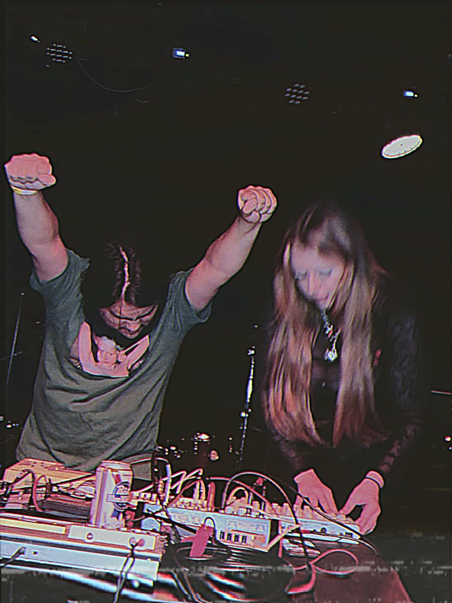

The Body & The Whip is an enduring Grand Rapids harsh noise project by Monte Davis (Palm Hands) and Lurex Catsuit.
Established in 2011.
15 years of being peppered through GRHN’s rich noise history, this is their first out of state show.
Sometimes bleeding, sometimes burning, never to be taken seriously.